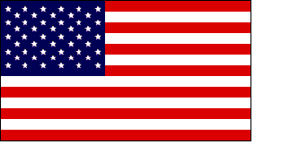

|  |
r00t3d bY FLUID
|
I am
the flag of the United States of America. I was
born on June 14, 1777, in Philadelphia. There
the Continental Congress adopted my stars and stripes as the national flag. My thirteen
stripes alternating red and white, with a union of thirteen white stars in a
field of blue, represented a new constellation, a new nation dedicated to the
personal and religious liberty of mankind. Today
fifty stars signal from my union, one for each of the fifty sovereign states
in the greatest constitutional republic the world has ever known. My colors
symbolize the patriotic ideals and spiritual qualities of the citizens of my
country. My red
stripes proclaim the fearless courage and integrity of American men and boys
and the self-sacrifice and devotion of American mothers and daughters. My white
stripes stand for liberty and equality for all. My blue
is the blue of heaven, loyalty, and faith. I represent
these eternal principles: liberty, justice, and humanity. I embody
American freedom: freedom of speech, religion, assembly, the press, and the
sanctity of the home. I typify
that indomitable spirit of determination brought to my land by Christopher Columbus
and by all my forefathers - the Pilgrims, Puritans, settlers at James town and
Plymouth. I am
as old as my nation. I am
a living symbol of my nation's law: the Constitution of the United States and
the Bill of Rights. I voice
Abraham Lincoln's philosophy: "A government of the people, by the people,for
the people." I stand
guard over my nation's schools, the seedbed of good citizenship and true patriotism. I am
displayed in every schoolroom throughout my nation; every schoolyard has a flag
pole for my display. Daily
thousands upon thousands of boys and girls pledge their allegiance to me and
my country. I have
my own law—Public Law 829, "The Flag Code" - which definitely states my correct
use and display for all occasions and situations. I have
my special day, Flag Day. June 14 is set aside to honor my birth. Americans,
I am the sacred emblem of your country. I symbolize your birthright, your heritage
of liberty purchased with blood and sorrow. I am
your title deed of freedom, which is yours to enjoy and hold in trust for posterity. If you
fail to keep this sacred trust inviolate, if I am nullified and destroyed, you
and your children will become slaves to dictators and despots. Eternal
vigilance is your price of freedom. As you
see me silhouetted against the peaceful skies of my country, remind yourself
that I am the flag of your country, that I stand for what you are - no more,
no less. Guard
me well, lest your freedom perish from the earth. Dedicate
your lives to those principles for which I stand: "One nation under God, indivisible,
with liberty and justice for all." I was
created in freedom. I made my first appearance in a battle for human liberty. God
grant that I may spend eternity in my "land of the free and the home of the
brave" and that I shall ever be known as "Old Glory," the flag of the United
States of America.